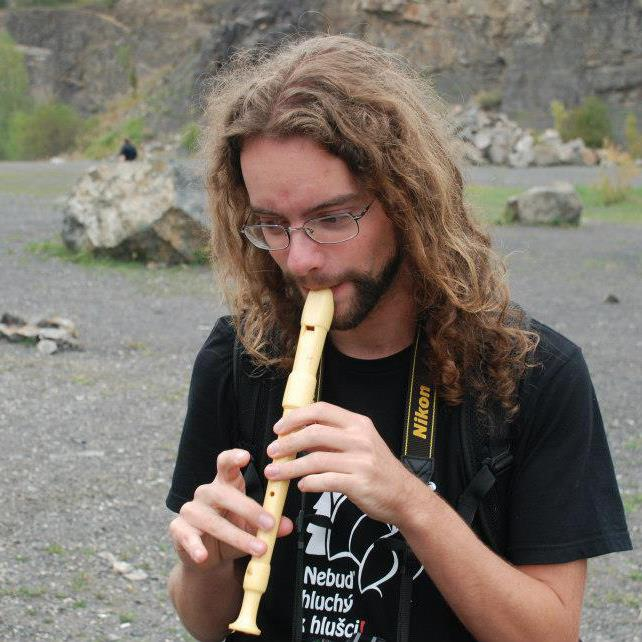

Zdeněk Janovský Vedoucí skupiny, populační ekologie rostlin, květní ekologie, statistika. Vyučující kursu "Rostlinné interakce".
 Jiří Hadrava Doktorand, ekologie a diversita pestřenek a dalších dvoukřídlých. Vyučující kursu "Praktikum k rostlinným interakcím".